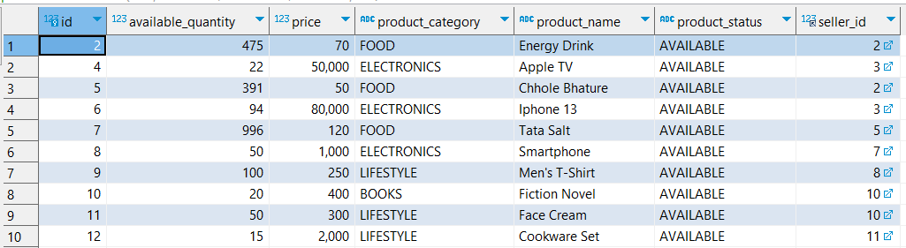
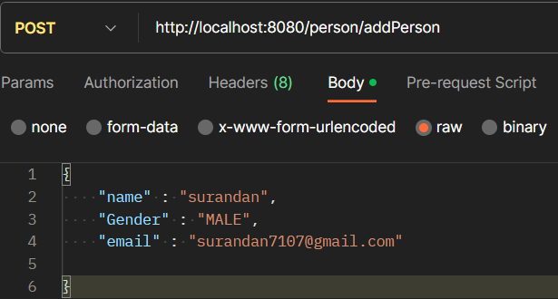
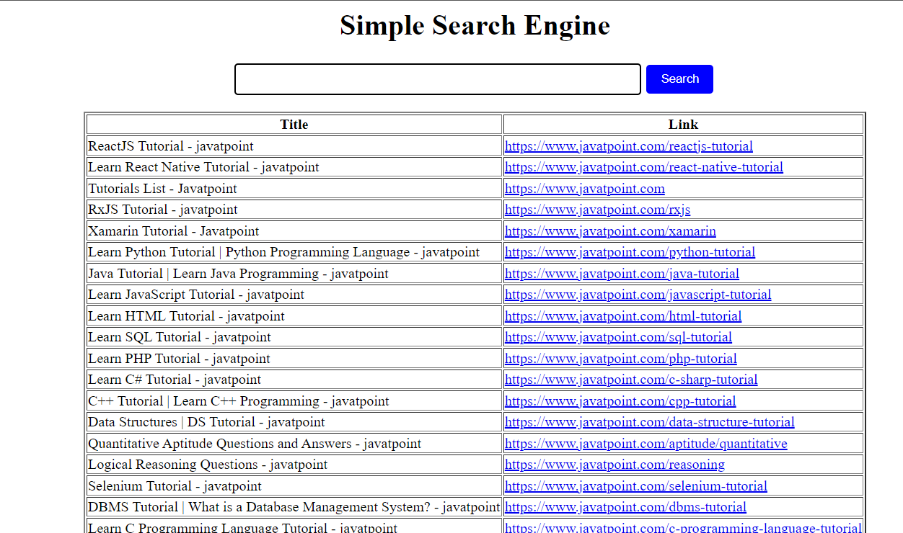
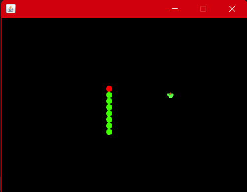

Aspiring Software Developer with Bachelor's of Engineering from BVCOE Navi Mumbai, CGPA -
7.95/10.0. Skilled in Java
programming and Spring Boot, including REST APIs and JPA for backend development. Experienced in
creating dynamic web applications using Java, JSP, and MySQL. Proficient in problem-solving and
teamwork, with a passion for software development, music, and chess. Completed internships in
project teamwork and design solutions. Achieved qualification in GATE 2022 ME paper. Currently
pursuing coursework in Data Structures, Algorithms, Backend Development, and ongoing studies in
Frontend development.

Skills
- JAVA
- SPRING BOOT, JPA, REST APIs
- HTML5, CSS3
- MySQL, MSSQL
- DATA STRUCTURES, ALGORITHMS

• Back-end app for managing e-commerce website data.
• Has multiple REST APIs which do CRUD operations on database.
• Has entities like Product, Customer, Seller, Order, etc. MVC architecture
uses MySQL as database. Contains various dependencies from maven.
• Customer can order directly or via cart or cancels and receives email
about order.
• Sellers data get updated accordingly.
• Tech Stack: Java, Spring Boot, JPA, Hibernate, MySQL.

• Developed Back-end app based on Java and Spring Boot for managing
data for Corona vaccines.
• It has various Rest APIs which helps in storing persons, doctors, dose
types data and their relationships using PostgreSQL as database.
• It also can book appointments and send email to respective person.
• Tech Stack: Java, Spring Boot, Hibernate, PostgreSQL.

• Developed web app based on Java and JSP allowing users to search sites.
• App gives 30 most relevant results based on frequency of query.
• Users can also access history of queries they searched before.
• MySQL used as Database which stores websites and search history.
• Tech Stack: Java, Html, JSP, MySQL.

• Developed a 2D game that allows users to play classic Snake-Dot game.
• User can see score after the game.
• Used JPanel and Swing library to give dynamics to game.
• Tech Stack: Java.